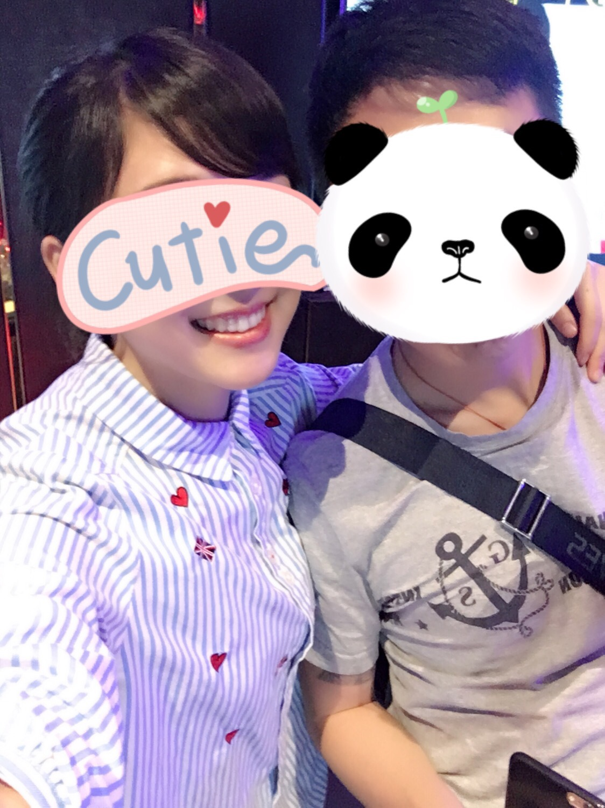
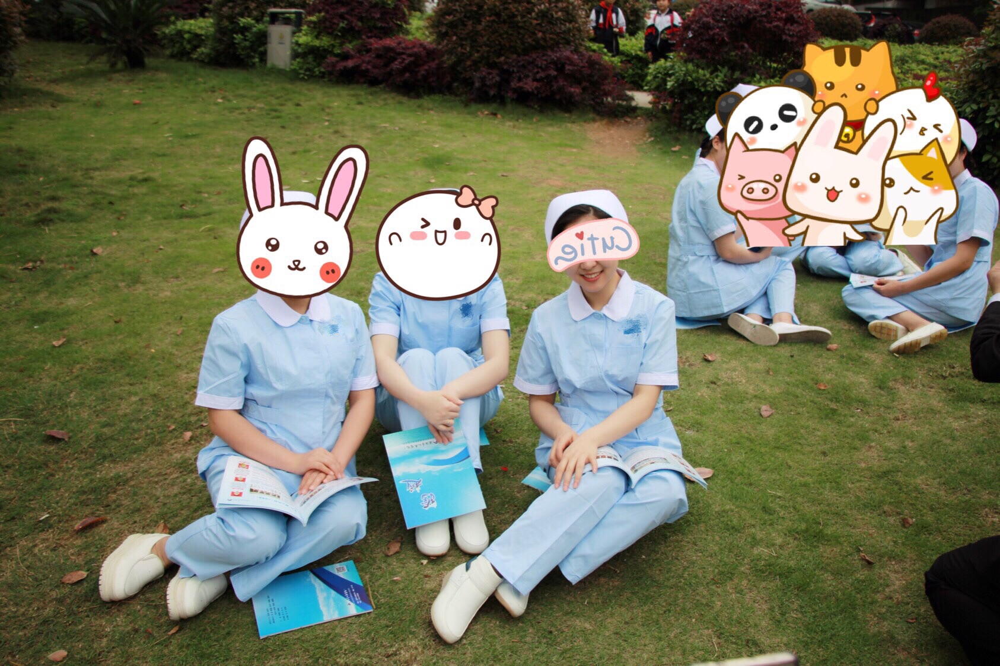

正文: 居然邀请我回答这个问题，就不怕我骄傲吗～
看了几个高票回答，几乎都是说在临床工作中颜值高并没有什么卵用，技术精湛才是关键。我方观点表示——贵方说得对！
然鹅，在跟其他科室打交道的时候还是很有优势的啊～其实我颜值并不高，就是嘴甜爱笑，所以找同事帮忙的时候几乎有求必应。比如，科室“外交”的事基本上都是我去跑腿，有时候一忙起来就忘记在规定时间内把下个月的物品领用计划交上去，于是就厚着脸皮去耍赖，哥哥姐姐一顿喊，喊得他们心花怒放了也就给我补上去了～
再比如，科室的电脑打印机之类的出故障了，人家打电话给信息科，接到的回复是：等着，有时间就过来啦！我打电话过去，人家跟我说的是：好，就来。
还有一个比较招其他科室恨的就是，医院每次拍宣传照都是找我们科室，拍得我们都不耐烦了，真的。。。
国际惯例爆个照。


我已经把鼻子也挡住了，再挑我的毛病，我就要发宝气了！哼！(╯﹏╰）